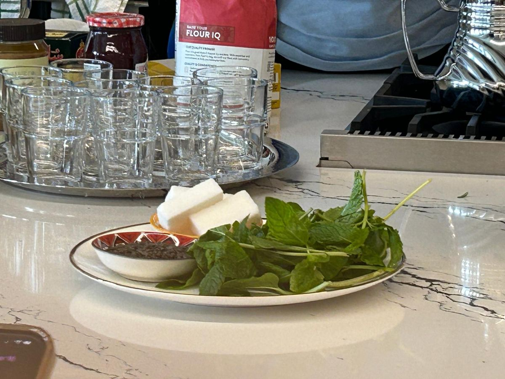
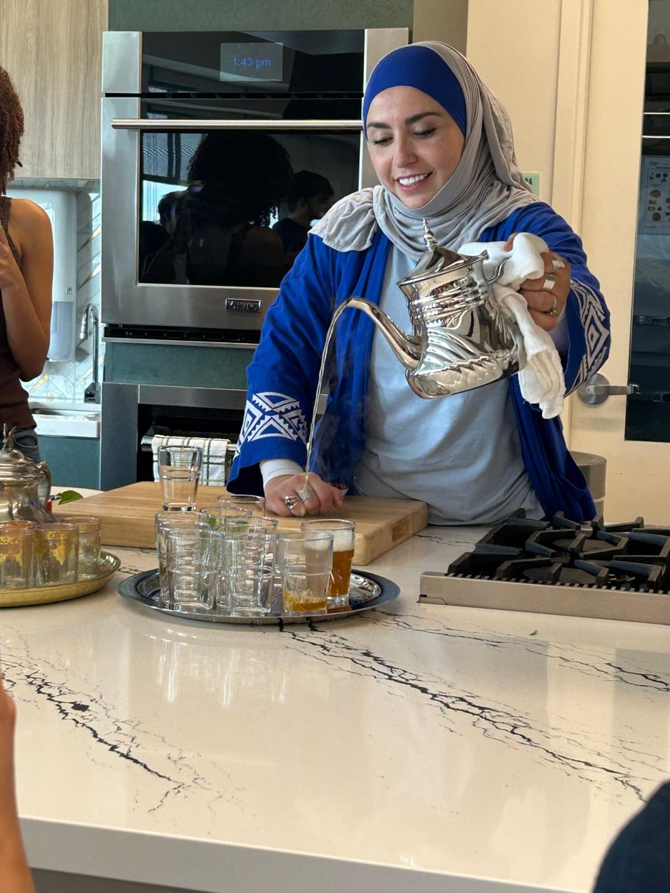
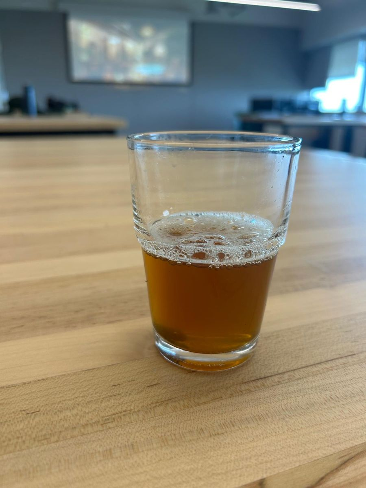

Our classroom doubles as a kitchen, but on the day of the msemmen demonstration it stopped feeling like a classroom at all. Instead of sitting in rows, we pulled our chairs around the kitchen island where our professor stood at the stove. Arabic music played in the background, and photos of Morocco rotated on the projector screen. It felt like a home kitchen, the kind where my mom would be cooking and call out for someone to pass her an ingredient. That feeling made me relaxed enough to ask questions, make mistakes, and actually enjoy myself.
A Bread Made of Folds
Msemmen, also called rghaif, is a layered flatbread from the Maghreb region of North Africa, most closely tied to Morocco and Algeria and rooted in Berber cooking. The dough is made from flour and semolina, stretched very thin, brushed with butter, sprinkled with semolina, and folded into a square. Every fold traps a thin coat of butter and semolina, so once it hits the griddle the bread puffs into flaky layers. In Morocco it is usually eaten at breakfast or with afternoon tea, often with honey.
Our professor showed us the whole process first, then gave each of us our own dough balls. This is where my hands ran into my own heritage. Back home in India, I have rolled out chapatis and rotis many times, and the goal is always a neat circle with a rolling pin. Msemmen asked for the opposite: no rolling pin, just stretching by hand until the dough was almost see-through, then folding it into a square. My habits kept pulling me toward rounded edges, so I had to think about every fold.
My first attempt did not go well. The dough kept sticking to the tray, and some spots got so thin I was scared it would tear. Instead of forcing it, I stopped and watched our professor do it again, paying closer attention to her hands. On my second try the msemmen came off the pan golden and flaky, and we finished them with honey. That small turnaround from frustration to pride was one of my favorite moments of the semester.

The Lesson in the Pour
We paired the bread with Moroccan mint tea, or atay, made from Chinese gunpowder green tea, fresh spearmint, and sugar. I had never seen sugar in solid blocks before. Tea reached North Africa through British traders in the 18th and 19th centuries, and since then it has become one of the strongest symbols of Moroccan hospitality. My job was serving, which meant learning not just how to pour, but how a Moroccan host looks after guests.
Our professor explained that in Moroccan culture tea is always offered to guests, and a host who does not serve it may be talked about badly. That hit close to home. In India, whenever guests come over, it is expected that you serve a drink and some snacks. The drink changes with the season, but the gesture does not, and people notice if it is missing.

Then there was the high pour. Pouring from far above the glass creates a layer of foam, and our professor told us the foam helps keep dust out of the tea. Later I read that the high pour also aerates the tea, helps the loose leaves settle, and is considered a sign of respect toward the guest. What looked like a performance was a practical technique wrapped inside a gesture of respect.
The method surprised me too. Indian chai is made in steps, with the tea extracted first and milk added after. Moroccan tea is closer to green tea, with everything brought together in the pot and no milk at all, so it comes out clear and amber instead of creamy. Our professor said Moroccans drink tea around five times a day, almost like an energy drink. For me tea was something to start the day with, so seeing it as a rhythm that structures the whole day was new.

A Fusion Waiting to Happen
My first thought after tasting the msemmen was that it would be amazing savory, with salt, next to an Indian curry full of masalas. It turns out Moroccans already make savory versions stuffed with onions, tomatoes, or khlea, a preserved meat. That made me see how close msemmen is to the layered flatbreads I grew up with. I came for a recipe and left with a lesson in hosting, a new skill for my hands, and a class that felt a lot more like a family by the end of the afternoon.
References
Epicure & Culture. (n.d.). Traditional Moroccan tea ceremony: What it is & how to do it. https://epicureandculture.com/moroccan-tea-ceremony/
Wikipedia. (n.d.). Maghrebi mint tea. https://en.wikipedia.org/wiki/Maghrebi_mint_tea
Wikipedia. (n.d.). Msemmen. https://en.wikipedia.org/wiki/Msemmen